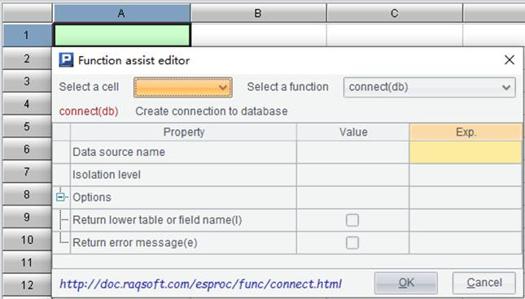
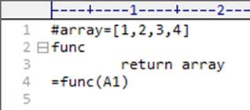

Find the cellset files .splx/.dfx that contain the specified content under a specific directory and return related information including the eligible file paths. To search for the .splx/.dfx files where cells contain ¡°demo¡± in the D:\Desktop\DemoData directory, for instance, we get the following results:

We can also replace the eligible text with something else. To replace ¡°demo¡± in these dfx files with ¡°DB1¡±, for instance, we get the following results:
